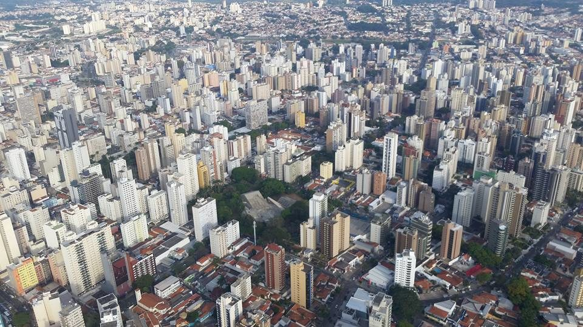
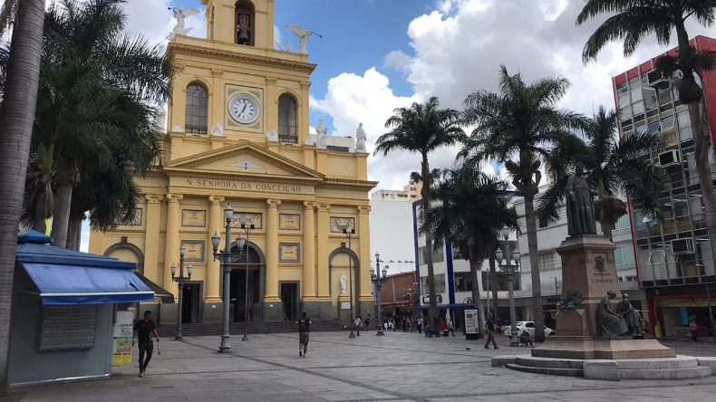

Campinas
A 3º maior cidade de SP
Curiosidades
Campinas é um município brasileiro no interior do estado de São Paulo, Região Sudeste do país. Pertence à microrregião e mesorregião homônimas, distante 99 km a noroeste de São Paulo, capital estadual. Ocupa uma área de 797,6 km², da qual 232778,323 km² estão em perímetro urbano e os 559, km² restantes constituem a zona rural. Em 2018, sua população foi estimada pelo Instituto Brasileiro de Geografia e Estatística em 1 194 094 habitantes, sendo o terceiro município mais populoso de São Paulo (ficando atrás de Guarulhos e da capital) e o décimo quarto de todo o país. Aparece em quinto lugar entre 100 municípios analisados pelo Índice das Melhores e Maiores Cidades Brasileiras, o BCI100, elaborado pela Delta Economics & Finance com base nos dados do Censo 2010 do IBGE e do Ideb.

Campinas foi fundada em 14 de julho de 1774. Entre o final do século XVIII e o começo do século XX, a cidade teve o café e a cana-de-açúcar como importantes atividades econômicas. Porém, desde a década de 1930, a indústria e o comércio são as principais fontes de renda, sendo considerada um polo industrial regional. Atualmente, é formada por seis distritos, além da sede, sendo, ainda, subdividida em 14 administrações regionais, cinco regiões e vários bairros.
Décima cidade mais rica do Brasil, hoje é responsável por pelo menos 15% de toda a produção científica nacional, sendo o terceiro maior polo de pesquisa e desenvolvimento brasileiro. Tem também diversos atrativos turísticos, com valor histórico, cultural ou científico, como museus, parques e teatros. A Orquestra Sinfônica Municipal de Campinas, fundada em 1974, é considerada uma das principais do país.
A Região Metropolitana de Campinas, formada por vinte municípios paulistas, possui uma população de mais de três milhões de habitantes, formando a décima maior área metropolitana do Brasil e, junto com a Grande São Paulo e a Baixada Santista, integra o chamado Complexo Metropolitano Expandido, a primeira macrometrópole do hemisfério sul, que ultrapassa trinta milhões de habitantes, aproximadamente 75% da população total do estado de São Paulo.
História
As áreas que hoje constituem o estado de São Paulo já eram habitadas pelo homem desde aproximadamente 12000 a.C. Até a primeira metade do século XVIII, Campinas não passava de uma área ampla constituída por largas faixas de campos naturais, as quais eram designadas simplesmente por campinas, com áreas de mata atlântica fechadas ao redor, em especial nas regiões montanhosas. Naquela época, surgiu um bairro rural na Vila de Jundiaí (hoje Jundiaí) chamado "Mato Grosso", próximo a uma trilha feita por Bandeirantes do "Planalto de Piratininga" (a região da atual cidade de São Paulo) entre 1721 e 1730. Era a "Trilha dos Goiases", desbravadas por Bandeirantes e que seguia em direção às então recém-descobertas "Minas dos Goiases", no atual Estado de Goiás. Assim o Bandeirante Fernão de Camargo promoveu a noroeste da Vila de São Paulo a instalação de um ponto de parada de tropeiros (chamado "Campinas do Mato Grosso" por ter sido erguido num desses campos naturais cercados por mata cerrada) era usualmente feita pelos Bandeirantes, que com isso permitiam ou facilitavam futuro reabastecimento de suas empreitadas desbravadoras, e por isso ao longo do tempo impulsionou comércio e atraiu moradores para o local.
Por volta do ano de 1772, os moradores daquela região reivindicavam a construção de uma capela, já que a igreja mais próxima do povoado situava-se em Jundiaí. A permissão foi concedida um ano mais tarde, demarcando-se, no dia 22 de setembro daquele ano, o local que seria destinado à construção da Igreja Matriz de Nossa Senhora da Conceição, cujo nome foi recebido em homenagem à padroeira, escolhida por votação. A dificuldade das obras daquele tempo fez com que fosse construída uma capela provisória, em 1774. No dia 27 de maio desse ano, foi assinado um ato que dava a Francisco Barreto Leme do Prado o título de "fundador, administrador e diretor" do núcleo urbano a ser fundado. Em outro ato feito no mesmo dia, foi definida a medida das ruas e quadras, assim como a posição das casas, sendo esse o primeiro "plano urbanístico" recebido por Campinas. Poucas semanas depois, em 14 de julho de 1774, Frei Antônio de Pádua, primeiro vigário da paróquia, rezou a missa que inaugurava a capela provisória coberta de palha e feita às pressas. A partir daí, instalou-se definitivamente a Freguesia de Nossa Senhora da Conceição das Campinas do Mato Grosso e fundou-se a povoação. Em 14 de dezembro de 1797 Campinas foi emancipada de Jundiaí, através de sua elevação à condição de vila, com o nome de Vila de São Carlos.